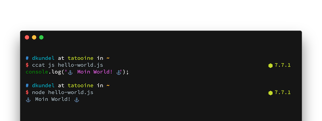

Moin World!
Mar 3, 2017
Hello or “Moin! Moin!” how you would say in Northern Germany.

My name is Dominik Kundel, I’m a software developer from Bremen, Germany and currently working as a developer evangelist for Twilio from Berlin, Germany.
I recently found this domain as available and figured it’s the perfect opportunity to create a new blog. I’ll be writing about all sorts of coding related topics but you can be guaranteed that a lot of it will be about Node.js, JavaScript and the web in general and maybe some Swift  .
.
This blog is powered by Hexo and will be fully open source on GitHub.